Уравнения — одна из сложных тем для усвоения, но при этом они являются достаточно мощным инструментом для решения большинства задач.
С помощью уравнений описываются различные процессы, протекающие в природе. Уравнения широко применяются в других науках: в экономике, физике, биологии и химии.
В данном уроке мы попробуем понять суть простейших уравнений, научимся выражать неизвестные и решим несколько уравнений. По мере усвоения новых материалов, уравнения будут усложняться, поэтому понять основы очень важно.
Предварительные навыки- Основные операции
- Выражения
- Буквенные выражения
- Вынесение общего множителя за скобки
- Раскрытие скобок
- Что такое уравнение?
- Выразить одно через другое
- Правила нахождения неизвестных
- Компоненты
- Равносильные уравнения
- Умножение на минус единицу
- Приравнивание к нулю
- Альтернатива правилам нахождения неизвестных
- Когда корней несколько
- Когда корней бесконечно много
- Когда корней нет
- Буквенные уравнения
- Линейные уравнения с одним неизвестным
- Задания для самостоятельного решения
Что такое уравнение?
Уравнение — это равенство, содержащее в себе переменную, значение которой требуется найти. Это значение должно быть таким, чтобы при его подстановке в исходное уравнение получалось верное числовое равенство.
Например выражение 3 + 2 = 5 является равенством. При вычислении левой части получается верное числовое равенство 5 = 5.
А вот равенство 3 + x = 5 является уравнением, поскольку содержит в себе переменную x, значение которой можно найти. Значение должно быть таким, чтобы при подстановке этого значения в исходное уравнение, получилось верное числовое равенство.
Другими словами, мы должны найти такое значение, при котором знак равенства оправдал бы свое местоположение — левая часть должна быть равна правой части.
Уравнение 3 + x = 5 является элементарным. Значение переменной x равно числу 2. При любом другом значении равенство соблюдáться не будет
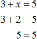
Говорят, что число 2 является корнем или решением уравнения 3 + x = 5
Корень или решение уравнения — это значение переменной, при котором уравнение обращается в верное числовое равенство.
Корней может быть несколько или не быть совсем. Решить уравнение означает найти его корни или доказать, что корней нет.
Переменную, входящую в уравнение, иначе называют неизвестным. Вы вправе называть как вам удобнее. Это синонимы.
Примечание. Словосочетание «решить уравнение» говорит самó за себя. Решить уравнение означает «уравнять» равенство — сделать его сбалансированным, чтобы левая часть равнялась правой части.
Выразить одно через другое
Изучение уравнений по традиции начинается с того, чтобы научиться выражать одно число, входящее в равенство, через ряд других. Давайте не будем нарушать эту традицию и поступим так же.
Рассмотрим следующее выражение:
\[8 + 2\]
Данное выражение является суммой чисел 8 и 2. Значение данного выражения равно 10
\[8 + 2 = 10\]
Получили равенство. Теперь можно выразить любое число из этого равенства через другие числа, входящие в это же равенство. К примеру, выразим число 2.
Чтобы выразить число 2, нужно задать вопрос: «что нужно сделать с числами 10 и 8, чтобы получить число 2». Понятно, что для получения числа 2, нужно из числа 10 вычесть число 8.
Так и делаем. Записываем число 2 и через знак равенства говорим, что для получения этого числа 2 мы из числа 10 вычли число 8:
\[2 = 10 - 8\]
Мы выразили число 2 из равенства 8 + 2 = 10. Как видно из примера, ничего сложного в этом нет.
При решении уравнений, в частности при выражении одного числа через другие, знак равенства удобно заменять на слово «есть». Делать это нужно мысленно, а не в самом выражении.
Так, выражая число 2 из равенства 8 + 2 = 10 мы получили равенство 2 = 10 − 8. Данное равенство можно прочесть так:
2 есть 10 − 8
То есть знак = заменен на слово «есть». Более того, равенство 2 = 10 − 8 можно перевести с математического языка на полноценный человеческий язык. Тогда его можно будет прочитать следующим образом:
Число 2 есть разность числа 10 и числа 8
или
Число 2 есть разница между числом 10 и числом 8.
Но мы ограничимся лишь заменой знака равенства на слово «есть», и то будем делать это не всегда. Элементарные выражения можно понимать и без перевода математического языка на язык человеческий.
Вернём получившееся равенство 2 = 10 − 8 в первоначальное состояние:
\[8 + 2 = 10\]
Выразим в этот раз число 8. Что нужно сделать с остальными числами, чтобы получить число 8? Верно, нужно из числа 10 вычесть число 2
\[8 = 10 - 2\]
Вернем получившееся равенство 8 = 10 − 2 в первоначальное состояние:
\[8 + 2 = 10\]
В этот раз выразим число 10. Но оказывается, что десятку выражать не нужно, поскольку она уже выражена. Достаточно поменять местами левую и правую часть, тогда получится то, что нам нужно:
\[10 = 8 + 2\]
Пример 2. Рассмотрим равенство 8 − 2 = 6
Выразим из этого равенства число 8. Чтобы выразить число 8 остальные два числа нужно сложить:
\[8 = 6 + 2\]
Вернем получившееся равенство 8 = 6 + 2 в первоначальное состояние:
\[8 - 2 = 6\]
Выразим из этого равенства число 2. Чтобы выразить число 2, нужно из 8 вычесть 6
\[2 = 8 - 6\]
Пример 3. Рассмотрим равенство 3 × 2 = 6
Выразим число 3. Чтобы выразить число 3, нужно 6 разделить 2
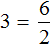
Вернем получившееся равенство в первоначальное состояние:
\[3 \times 2 = 6\]
Выразим из этого равенства число 2. Чтобы выразить число 2, нужно 6 разделить 3
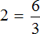
Пример 4. Рассмотрим равенство
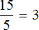
Выразим из этого равенства число 15. Чтобы выразить число 15, нужно перемножить числа 3 и 5
\[15 = 3 \times 5\]
Вернем получившееся равенство 15 = 3 × 5 в первоначальное состояние:
Выразим из этого равенства число 5. Чтобы выразить число 5, нужно 15 разделить 3
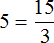
Правила нахождения неизвестных
Рассмотрим несколько правил нахождения неизвестных. Возможно, они вам знакомы, но не мешает повторить их ещё раз. В дальнейшем их можно будет забыть, поскольку мы научимся решать уравнения, не применяя эти правила.
Вернемся к первому примеру, который мы рассматривали в предыдущей теме, где в равенстве 8 + 2 = 10 требовалось выразить число 2.
В равенстве 8 + 2 = 10 числа 8 и 2 являются слагаемыми, а число 10 — суммой.
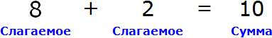
Чтобы выразить число 2, мы поступили следующим образом:
\[2 = 10 - 8\]
То есть из суммы 10 вычли слагаемое 8.
Теперь представим, что в равенстве 8 + 2 = 10 вместо числа 2 располагается переменная x
\[8 + x = 10\]
В этом случае равенство 8 + 2 = 10 превращается в уравнение 8 + x = 10, а переменная x берет на себя роль так называемого неизвестного слагаемого
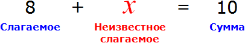
Наша задача найти это неизвестное слагаемое, то есть решить уравнение 8 + x = 10. Для нахождения неизвестного слагаемого предусмотрено следующее правило:
Чтобы найти неизвестное слагаемое, нужно из суммы вычесть известное слагаемое.
Что мы в принципе и сделали, когда выражали двойку в равенстве 8 + 2 = 10. Чтобы выразить слагаемое 2, мы из суммы 10 вычли другое слагаемое 8
\[2 = 10 - 8\]
А сейчас, чтобы найти неизвестное слагаемое x, мы должны из суммы 10 вычесть известное слагаемое 8:
\[x = 10 - 8\]
Если вычислить правую часть получившегося равенства, то можно узнать чему равна переменная x
\[x = 2\]
Мы решили уравнение. Значение переменной x равно 2. Для проверки значение переменной x отправляют в исходное уравнение 8 + x = 10 и подставляют вместо x. Так желательно поступать с любым решённым уравнением, поскольку нельзя быть точно уверенным, что уравнение решено правильно:
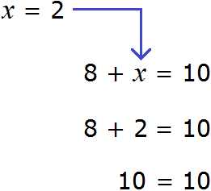
В результате получается верное числовое равенство. Значит уравнение решено правильно.
Это же правило действовало бы в случае, если неизвестным слагаемым было бы первое число 8.
\[x + 2 = 10\]
В этом уравнении x — это неизвестное слагаемое, 2 — известное слагаемое, 10 — сумма. Чтобы найти неизвестное слагаемое x, нужно из суммы 10 вычесть известное слагаемое 2
\[x = 10 - 2\]
\[x = 8\]
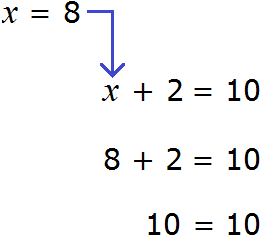
Вернемся ко второму примеру из предыдущей темы, где в равенстве 8 − 2 = 6 требовалось выразить число 8.
В равенстве 8 − 2 = 6 число 8 это уменьшаемое, число 2 — вычитаемое, число 6 — разность
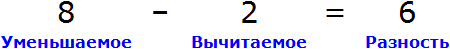
Чтобы выразить число 8, мы поступили следующим образом:
\[8 = 6 + 2\]
То есть сложили разность 6 и вычитаемое 2.
Теперь представим, что в равенстве 8 − 2 = 6 вместо числа 8 располагается переменная x
\[x - 2 = 6\]
В этом случае переменная x берет на себя роль так называемого неизвестного уменьшаемого
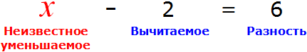
Для нахождения неизвестного уменьшаемого предусмотрено следующее правило:
Чтобы найти неизвестное уменьшаемое, нужно к разности прибавить вычитаемое.
Что мы и сделали, когда выражали число 8 в равенстве 8 − 2 = 6. Чтобы выразить уменьшаемое 8, мы к разности 6 прибавили вычитаемое 2.
А сейчас, чтобы найти неизвестное уменьшаемое x, мы должны к разности 6 прибавить вычитаемое 2
\[x = 6 + 2\]
Если вычислить правую часть, то можно узнать чему равна переменная x
\[x = 8\]
Теперь представим, что в равенстве 8 − 2 = 6 вместо числа 2 располагается переменная x
\[8 - x = 6\]
В этом случае переменная x берет на себя роль неизвестного вычитаемого
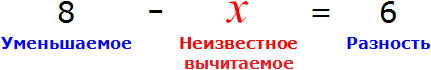
Для нахождения неизвестного вычитаемого предусмотрено следующее правило:
Чтобы найти неизвестное вычитаемое, нужно из уменьшаемого вычесть разность.
Что мы и сделали, когда выражали число 2 в равенстве 8 − 2 = 6. Чтобы выразить число 2, мы из уменьшаемого 8 вычли разность 6.
А сейчас, чтобы найти неизвестное вычитаемое x, нужно опять же из уменьшаемого 8 вычесть разность 6
\[x = 8 - 6\]
Вычисляем правую часть и находим значение x
\[x = 2\]
Вернемся к третьему примеру из предыдущей темы, где в равенстве 3 × 2 = 6 мы пробовали выразить число 3.
В равенстве 3 × 2 = 6 число 3 — это множимое, число 2 — множитель, число 6 — произведение
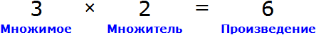
Чтобы выразить число 3 мы поступили следующим образом:
То есть разделили произведение 6 на множитель 2.
Теперь представим, что в равенстве 3 × 2 = 6 вместо числа 3 располагается переменная x
\[x \times 2 = 6\]
В этом случае переменная x берет на себя роль неизвестного множимого.
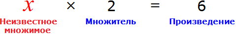
Для нахождения неизвестного множимого предусмотрено следующее правило:
Чтобы найти неизвестное множимое, нужно произведение разделить на множитель.
Что мы и сделали, когда выражали число 3 из равенства 3 × 2 = 6. Произведение 6 мы разделили на множитель 2.
А сейчас для нахождения неизвестного множимого x, нужно произведение 6 разделить на множитель 2.
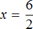
Вычисление правой части позволяет нам найти значение переменной x
\[x = 3\]
Это же правило применимо в случае, если переменная x располагается вместо множителя, а не множимого. Представим, что в равенстве 3 × 2 = 6 вместо числа 2 располагается переменная x.
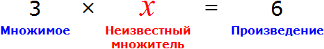
В этом случае переменная x берет на себя роль неизвестного множителя. Для нахождения неизвестного множителя предусмотрено такое же, что и для нахождения неизвестного множимого, а именно деление произведения на известный множитель:
Чтобы найти неизвестный множитель, нужно произведение разделить на множимое.
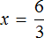
Что мы и сделали, когда выражали число 2 из равенства 3 × 2 = 6. Тогда для получения числа 2 мы разделили произведение 6 на множимое 3.
А сейчас для нахождения неизвестного множителя x мы разделили произведение 6 на множимое 3.
Вычисление правой части равенства позволяет узнать чему равно x
\[x = 2\]
Множимое и множитель вместе называют сомножителями. Поскольку правила нахождения множимого и множителя совпадают, мы можем сформулировать общее правило нахождения неизвестного сомножителя:
Чтобы найти неизвестный сомножитель, нужно произведение разделить на известный сомножитель.
Например, решим уравнение 9 × x = 18. Переменная x является неизвестным сомножителем. Чтобы найти этот неизвестный сомножитель, нужно произведение 18 разделить на известный сомножитель 9
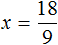
Отсюда
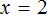
.Решим уравнение x × 3 = 27. Переменная x является неизвестным сомножителем. Чтобы найти этот неизвестный сомножитель, нужно произведение 27 разделить на известный сомножитель 3
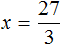
Отсюда
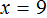
.Вернемся к четвертому примеру из предыдущей темы, где в равенстве требовалось выразить число 15. В этом равенстве число 15 — это делимое, число 5 — делитель, число 3 — частное.
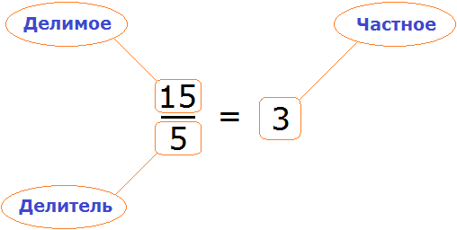
Чтобы выразить число 15 мы поступили следующим образом:
\[15 = 3 \times 5\]
То есть умножили частное 3 на делитель 5.
Теперь представим, что в равенстве вместо числа 15 располагается переменная x
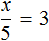
В этом случае переменная x берет на себя роль неизвестного делимого.
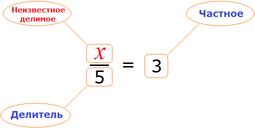
Для нахождения неизвестного делимого предусмотрено следующее правило:
Чтобы найти неизвестное делимое, нужно частное умножить на делитель.
Что мы и сделали, когда выражали число 15 из равенства . Чтобы выразить число 15, мы умножили частное 3 на делитель 5.
А сейчас, чтобы найти неизвестное делимое x, нужно частное 3 умножить на делитель 5
\[x = 3 \times 5\]
Вычислим правую часть получившегося равенства. Так мы узнаем чему равна переменная x.
\[x = 15\]
Теперь представим, что в равенстве вместо числа 5 располагается переменная x.
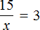
В этом случае переменная x берет на себя роль неизвестного делителя.
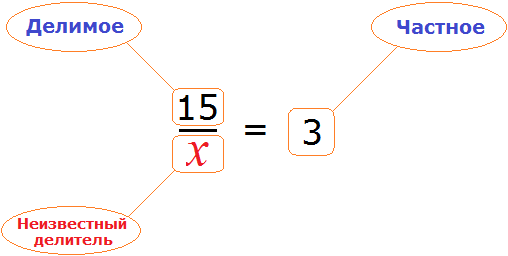
Для нахождения неизвестного делителя предусмотрено следующее правило:
Чтобы найти неизвестный делитель, нужно делимое разделить на частное.
Что мы и сделали, когда выражали число 5 из равенства . Чтобы выразить число 5, мы разделили делимое 15 на частное 3.
А сейчас, чтобы найти неизвестный делитель x, нужно делимое 15 разделить на частное 3
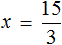
Вычислим правую часть получившегося равенства. Так мы узнаем чему равна переменная x.
\[x = 5\]
Итак, для нахождения неизвестных мы изучили следующие правила:
- Чтобы найти неизвестное слагаемое, нужно из суммы вычесть известное слагаемое;
- Чтобы найти неизвестное уменьшаемое, нужно к разности прибавить вычитаемое;
- Чтобы найти неизвестное вычитаемое, нужно из уменьшаемого вычесть разность;
- Чтобы найти неизвестное множимое, нужно произведение разделить на множитель;
- Чтобы найти неизвестный множитель, нужно произведение разделить на множимое;
- Чтобы найти неизвестное делимое, нужно частное умножить на делитель;
- Чтобы найти неизвестный делитель, нужно делимое разделить на частное.
Компоненты
Компонентами мы будем называть числа и переменные, входящие в равенство
Так, компонентами сложения являются слагаемые и сумма
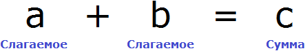
Компонентами вычитания являются уменьшаемое, вычитаемое и разность
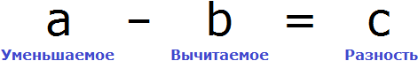
Компонентами умножения являются множимое, множитель и произведение
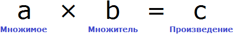
Компонентами деления являются делимое, делитель и частное
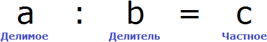
В зависимости от того, с какими компонентами мы будем иметь дело, будут применяться соответствующие правила нахождения неизвестных. Эти правила мы изучили в предыдущей теме. При решении уравнений желательно знать эти правило наизусть.
Пример 1. Найти корень уравнения 45 + x = 60
45 — слагаемое, x — неизвестное слагаемое, 60 — сумма. Имеем дело с компонентами сложения. Вспоминаем, что для нахождения неизвестного слагаемого, нужно из суммы вычесть известное слагаемое:
\[x = 60 - 45\]
Вычислим правую часть, получим значение x равное 15
\[x = 15\]
Значит корень уравнения 45 + x = 60 равен 15.
Чаще всего неизвестное слагаемое необходимо привести к виду при котором его можно было бы выразить.
Пример 2. Решить уравнение
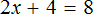
Здесь в отличие от предыдущего примера, неизвестное слагаемое нельзя выразить сразу, поскольку оно содержит коэффициент 2. Наша задача привести это уравнение к виду при котором можно было бы выразить x
В данном примере мы имеем дело с компонентами сложения — слагаемыми и суммой. 2x — это первое слагаемое, 4 — второе слагаемое, 8 — сумма.
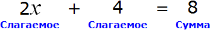
При этом слагаемое 2x содержит переменную x. После нахождения значения переменной x слагаемое 2x примет другой вид. Поэтому слагаемое 2x можно полностью принять за неизвестное слагаемое:
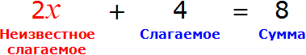
Теперь применяем правило нахождения неизвестного слагаемого. Вычитаем из суммы известное слагаемое:
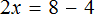
Вычислим правую часть получившегося уравнения:
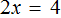
Мы получили новое уравнение . Теперь мы имеем дело с компонентами умножения: множимым, множителем и произведением. 2 — множимое, x — множитель, 4 — произведение
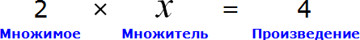
При этом переменная x является не просто множителем, а неизвестным множителем
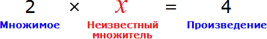
Чтобы найти этот неизвестный множитель, нужно произведение разделить на множимое:
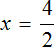
Вычислим правую часть, получим значение переменной x
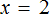
Для проверки найденный корень отправим в исходное уравнение и подставим вместо x
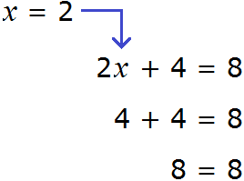
Получили верное числовое равенство. Значит уравнение решено правильно.
Пример 3. Решить уравнение 3x + 9x + 16x = 56
Cразу выразить неизвестное x нельзя. Сначала нужно привести данное уравнение к виду при котором его можно было бы выразить.
Приведем подобные слагаемые в левой части данного уравнения:
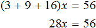
Имеем дело с компонентами умножения. 28 — множимое, x — множитель, 56 — произведение. При этом x является неизвестным множителем. Чтобы найти неизвестный множитель, нужно произведение разделить на множимое:
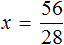
Отсюда x равен 2
Равносильные уравнения
В предыдущем примере при решении уравнения 3x + 9x + 16x = 56, мы привели подобные слагаемые в левой части уравнения. В результате получили новое уравнение 28x = 56. Старое уравнение 3x + 9x + 16x = 56 и получившееся новое уравнение 28x = 56 называют равносильными уравнениями, поскольку их корни совпадают.
Уравнения называют равносильными, если их корни совпадают.
Проверим это. Для уравнения 3x + 9x + 16x = 56 мы нашли корень равный 2. Подставим этот корень сначала в уравнение 3x + 9x + 16x = 56, а затем в уравнение 28x = 56, которое получилось в результате приведения подобных слагаемых в левой части предыдущего уравнения. Мы должны получить верные числовые равенства
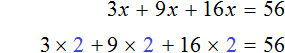
Согласно порядку действий, в первую очередь выполняется умножение:
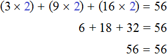
Подставим корень 2 во второе уравнение 28x = 56
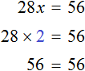
Видим, что у обоих уравнений корни совпадают. Значит уравнения 3x + 9x + 16x = 56 и 28x = 56 действительно являются равносильными.
Для решения уравнения 3x + 9x + 16x = 56 мы воспользовались одним из тождественных преобразований — приведением подобных слагаемых. Правильное тождественное преобразование уравнения позволило нам получить равносильное уравнение 28x = 56, которое проще решать.
Из тождественных преобразований на данный момент мы умеем только сокращать дроби, приводить подобные слагаемые, выносить общий множитель за скобки, а также раскрывать скобки. Существуют и другие преобразования, которые следует знать. Но для общего представления о тождественных преобразованиях уравнений, изученных нами тем вполне хватает.
Рассмотрим некоторые преобразования, которые позволяют получить равносильное уравнение
Если к обеим частям уравнения прибавить одно и то же число, то получится уравнение равносильное данному.
и аналогично:
Если из обеих частей уравнения вычесть одно и то же число, то получится уравнение равносильное данному.
Другими словами, корень уравнения не изменится, если к обеим частям данного уравнения прибавить (или вычесть из обеих частей) одно и то же число.
Пример 1. Решить уравнение
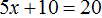
Вычтем из обеих частей уравнения число 10
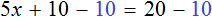
Приведем подобные слагаемые в обеих частях:
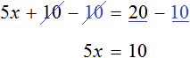
Получили уравнение 5x = 10. Имеем дело с компонентами умножения. Чтобы найти неизвестный сомножитель x, нужно произведение 10 разделить на известный сомножитель 5.
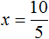
Отсюда .
Вернемся к исходному уравнению и подставим вместо x найденное значение 2
Получили верное числовое равенство. Значит уравнение решено правильно.
Решая уравнение мы вычли из обеих частей уравнения число 10. В результате получили равносильное уравнение . Корень этого уравнения, как и уравнения так же равен 2
Пример 2. Решить уравнение 4(x + 3) = 16
Раскроем скобки в левой части равенства:
Вычтем из обеих частей уравнения число 12
Приведем подобные слагаемые в обеих частях уравнения:
В левой части останется 4x, а в правой части число 4
Получили уравнение 4x = 4. Имеем дело с компонентами умножения. Чтобы найти неизвестный сомножитель x, нужно произведение 4 разделить на известный сомножитель 4
Отсюда
Вернемся к исходному уравнению 4(x + 3) = 16 и подставим вместо x найденное значение 1
Получили верное числовое равенство. Значит уравнение решено правильно.
Решая уравнение 4(x + 3) = 16 мы вычли из обеих частей уравнения число 12. В результате получили равносильное уравнение 4x = 4. Корень этого уравнения, как и уравнения 4(x + 3) = 16 так же равен 1
Пример 3. Решить уравнение
Раскроем скобки в левой части равенства:
Прибавим к обеим частям уравнения число 8
Приведем подобные слагаемые в обеих частях уравнения:
В левой части останется 2x, а в правой части число 9
В получившемся уравнении 2x = 9 выразим неизвестный сомножитель x
Отсюда
Вернемся к исходному уравнению и подставим вместо x найденное значение 4,5
Получили верное числовое равенство. Значит уравнение решено правильно.
Решая уравнение мы прибавили к обеим частям уравнения число 8. В результате получили равносильное уравнение . Корень этого уравнения, как и уравнения так же равен 4,5
Следующее правило, которое позволяет получить равносильное уравнение, выглядит следующим образом
Если в уравнении перенести слагаемое из одной части в другую, изменив его знак, то получится уравнение равносильное данному.
То есть корень уравнения не изменится, если мы перенесем слагаемое из одной части уравнения в другую, изменив его знак. Это свойство является одним из важных и одним из часто используемых при решении уравнений.
Рассмотрим следующее уравнение:
Корень данного уравнения равен 2. Подставим вместо x этот корень и проверим получается ли верное числовое равенство
Получается верное равенство. Значит число 2 действительно является корнем уравнения .
Теперь попробуем поэкспериментировать со слагаемыми этого уравнения, перенося их из одной части в другую, изменяя знаки.
Например, слагаемое 3x располагается в левой части равенства. Перенесём его в правую часть, изменив знак на противоположный:
Получилось уравнение 12 = 9x − 3x. Приведем подобные слагаемые в правой части данного уравнения:
Имеем дело с компонентами умножения. Переменная x является неизвестным сомножителем. Найдём этот известный сомножитель:
Отсюда x = 2. Как видим, корень уравнения не изменился. Значит уравнения 12 + 3x = 9x и 12 = 9x − 3x являются равносильными.
На самом деле данное преобразование является упрощенным методом предыдущего преобразования, где к обеим частям уравнения прибавлялось (или вычиталось) одно и то же число.
Мы сказали, что в уравнении 12 + 3x = 9x слагаемое 3x было перенесено в правую часть, изменив знак. В реальности же происходило следующее: из обеих частей уравнения вычли слагаемое 3x
Затем в левой части были приведены подобные слагаемые и получено уравнение 12 = 9x − 3x. Затем опять были приведены подобные слагаемые, но уже в правой части, и получено уравнение 12 = 6x.
Но так называемый «перенос» более удобен для подобных уравнений, поэтому он и получил такое широкое распространение. Решая уравнения, мы часто будем пользоваться именно этим преобразованием.
Равносильными также являются уравнения 12 + 3x = 9x и 3x − 9x = −12. В этот раз в уравнении 12 + 3x = 9x слагаемое 12 было перенесено в правую часть, а слагаемое 9x в левую. Не следует забывать, что знаки этих слагаемых были изменены во время переноса
Следующее правило, которое позволяет получить равносильное уравнение, выглядит следующим образом:
Если обе части уравнения умножить или разделить на одно и то же число, не равное нулю, то получится уравнение равносильное данному.
Другими словами, корни уравнения не изменятся, если обе его части умножить или разделить на одно и то же число. Это действие часто применяется тогда, когда нужно решить уравнение содержащее дробные выражения.
Сначала рассмотрим примеры, в которых обе части уравнения будут умножаться на одно и то же число.
Пример 1. Решить уравнение
При решении уравнений, содержащих дробные выражения, сначала принято упростить это уравнение.
В данном случае мы имеем дело именно с таким уравнением. В целях упрощения данного уравнения обе его части можно умножить на 8:
Мы помним, что для умножения дроби на число, нужно числитель данной дроби умножить на это число. У нас имеются две дроби и каждая из них умножается на число 8. Наша задача умножить числители дробей на это число 8
Теперь происходит самое интересное. В числителях и знаменателях обеих дробей содержится множитель 8, который можно сократить на 8. Это позволит нам избавиться от дробного выражения:
В результате останется простейшее уравнение
Ну и нетрудно догадаться, что корень этого уравнения равен 4
Вернемся к исходному уравнению и подставим вместо x найденное значение 4
Получается верное числовое равенство. Значит уравнение решено правильно.
При решении данного уравнения мы умножили обе его части на 8. В результате получили уравнение . Корень этого уравнения, как и уравнения равен 4. Значит эти уравнения равносильны.
Множитель на который умножаются обе части уравнения принято записывать перед частью уравнения, а не после неё. Так, решая уравнение , мы умножили обе части на множитель 8 и получили следующую запись:
От этого корень уравнения не изменился, но если бы мы сделали это находясь в школе, то нам сделали бы замечание, поскольку в алгебре множитель принято записывать перед тем выражением, с которым он перемножается. Поэтому умножение обеих частей уравнения на множитель 8 желательно переписать следующим образом:
Пример 2. Решить уравнение
Умнóжим обе части уравнения на 15
В левой части множители 15 можно сократить на 15, а в правой части множители 15 и 5 можно сократить на 5
Перепишем то, что у нас осталось:
Раскроем скобки в правой части уравнения:
Перенесем слагаемое x из левой части уравнения в правую часть, изменив знак. А слагаемое 15 из правой части уравнения перенесем в левую часть, опять же изменив знак:
Приведем подобные слагаемые в обеих частях, получим
Имеем дело с компонентами умножения. Переменная x является неизвестным сомножителем. Найдём этот известный сомножитель:
Отсюда
Вернемся к исходному уравнению и подставим вместо x найденное значение 5
Получается верное числовое равенство. Значит уравнение решено правильно. При решении данного уравнения мы умножили обе го части на 15. Далее выполняя тождественные преобразования, мы получили уравнение 10 = 2x. Корень этого уравнения, как и уравнения равен 5. Значит эти уравнения равносильны.
Пример 3. Решить уравнение
Умнóжим обе части уравнения на 3
В левой части можно сократить две тройки, а правая часть будет равна 18
Останется простейшее уравнение . Имеем дело с компонентами умножения. Переменная x является неизвестным сомножителем. Найдём этот известный сомножитель:
Отсюда
Вернемся к исходному уравнению и подставим вместо x найденное значение 9
Получается верное числовое равенство. Значит уравнение решено правильно.
Пример 4. Решить уравнение
Умнóжим обе части уравнения на 6
В левой части уравнения раскроем скобки. В правой части множитель 6 можно поднять в числитель:
Сократим в обеих частях уравнениях то, что можно сократить:
Перепишем то, что у нас осталось:
Раскроем скобки в обеих частях уравнения:
Воспользуемся переносом слагаемых. Слагаемые, содержащие неизвестное x, сгруппируем в левой части уравнения, а слагаемые свободные от неизвестных — в правой:
Приведем подобные слагаемые в обеих частях:
Теперь найдем значение переменной x. Для этого разделим произведение 28 на известный сомножитель 7
Отсюда x = 4.
Вернемся к исходному уравнению и подставим вместо x найденное значение 4
Получилось верное числовое равенство. Значит уравнение решено правильно.
Пример 5. Решить уравнение
Раскроем скобки в обеих частях уравнения там, где это можно:
Умнóжим обе части уравнения на 15
Раскроем скобки в обеих частях уравнения:
Сократим в обеих частях уравнения, то что можно сократить:
Перепишем то, что у нас осталось:
Раскроем скобки там, где это можно:
Воспользуемся переносом слагаемых. Слагаемые, содержащие неизвестное, сгруппируем в левой части уравнения, а слагаемые, свободные от неизвестных — в правой. Не забываем, что во время переноса, слагаемые меняют свои знаки на противоположные:
Приведем подобные слагаемые в обеих частях уравнения:
Найдём значение x
В получившемся ответе можно выделить целую часть:
Вернемся к исходному уравнению и подставим вместо x найденное значение
Получается довольно громоздкое выражение. Воспользуемся переменными. Левую часть равенства занесем в переменную A, а правую часть равенства в переменную B
Наша задача состоит в том, чтобы убедиться равна ли левая часть правой. Другими словами, доказать равенство A = B
Найдем значение выражения, находящегося в переменной А.
Значение переменной А равно . Теперь найдем значение переменной B. То есть значение правой части нашего равенства. Если и оно равно , то уравнение будет решено верно
Видим, что значение переменной B, как и значение переменной A равно . Это значит, что левая часть равна правой части. Отсюда делаем вывод, что уравнение решено правильно.
Теперь попробуем не умножать обе части уравнения на одно и то же число, а делить.
Рассмотрим уравнение 30x + 14x + 14 = 70x − 40x + 42. Решим его обычным методом: слагаемые, содержащие неизвестные, сгруппируем в левой части уравнения, а слагаемые, свободные от неизвестных — в правой. Далее выполняя известные тождественные преобразования, найдем значение x
Подставим найденное значение 2 вместо x в исходное уравнение:
Теперь попробуем разделить все слагаемые уравнения 30x + 14x + 14 = 70x − 40x + 42 на какое-нибудь число. Замечаем, что все слагаемые этого уравнения имеют общий множитель 2. На него и разделим каждое слагаемое:
Выполним сокращение в каждом слагаемом:
Перепишем то, что у нас осталось:
Решим это уравнение, пользуясь известными тождественными преобразованиями:
Получили корень 2. Значит уравнения 15x + 7x + 7 = 35x − 20x + 21 и 30x + 14x + 14 = 70x − 40x + 42 равносильны.
Деление обеих частей уравнения на одно и то же число позволяет освобождать неизвестное от коэффициента. В предыдущем примере когда мы получили уравнение 7x = 14, нам потребовалось разделить произведение 14 на известный сомножитель 7. Но если бы мы в левой части освободили неизвестное от коэффициента 7, корень нашелся бы сразу. Для этого достаточно было разделить обе части на 7
Этим методом мы тоже будем пользоваться часто.
Умножение на минус единицу
Если обе части уравнения умножить на минус единицу, то получится уравнение равносильное данному.
Это правило следует из того, что от умножения (или деления) обеих частей уравнения на одно и то же число, корень данного уравнения не меняется. А значит корень не поменяется если обе его части умножить на −1.
Данное правило позволяет поменять знаки всех компонентов, входящих в уравнение. Для чего это нужно? Опять же, чтобы получить равносильное уравнение, которое проще решать.
Рассмотрим уравнение . Чему равен корень этого уравнения?
Прибавим к обеим частям уравнения число 5
Приведем подобные слагаемые:
А теперь вспомним про коэффициент буквенного выражения. Что же представляет собой левая часть уравнения . Это есть произведение минус единицы и переменной x
То есть минус, стоящий перед переменной x, относится не к самой переменной x, а к единице, которую мы не видим, поскольку коэффициент 1 принято не записывать. Это означает, что уравнение на самом деле выглядит следующим образом:
Имеем дело с компонентами умножения. Чтобы найти х, нужно произведение −5 разделить на известный сомножитель −1.
или разделить обе части уравнения на −1, что еще проще
Итак, корень уравнения равен 5. Для проверки подставим его в исходное уравнение. Не забываем, что в исходном уравнении минус стоящий перед переменной x относится к невидимой единице
Получилось верное числовое равенство. Значит уравнение решено верно.
Теперь попробуем умножить обе части уравнения на минус единицу:
После раскрытия скобок в левой части образуется выражение , а правая часть будет равна 10
Корень этого уравнения, как и уравнения равен 5
Значит уравнения и равносильны.
Пример 2. Решить уравнение
В данном уравнении все компоненты являются отрицательными. С положительными компонентами работать удобнее, чем с отрицательными, поэтому поменяем знаки всех компонентов, входящих в уравнение . Для этого умнóжим обе части данного уравнения на −1.
Понятно, что от умножения на −1 любое число поменяет свой знак на противоположный. Поэтому саму процедуру умножения на −1 и раскрытие скобок подробно не расписывают, а сразу записывают компоненты уравнения с противоположными знаками.
Так, умножение уравнения на −1 можно записать подробно следующим образом:
либо можно просто поменять знаки всех компонентов:
Получится то же самое, но разница будет в том, что мы сэкономим себе время.
Итак, умножив обе части уравнения на −1, мы получили уравнение . Решим данное уравнение. Из обеих частей вычтем число 4 и разделим обе части на 3
Когда корень найден, переменную обычно записывают в левой части, а её значение в правой, что мы и сделали.
Пример 3. Решить уравнение
Умнóжим обе части уравнения на −1. Тогда все компоненты поменяют свои знаки на противоположные:
Из обеих частей получившегося уравнения вычтем 2x и приведем подобные слагаемые:
Прибавим к обеим частям уравнения единицу и приведем подобные слагаемые:
Приравнивание к нулю
Недавно мы узнали, что если в уравнении перенести слагаемое из одной части в другую, изменив его знак, то получится уравнение равносильное данному.
А что будет если перенести из одной части в другую не одно слагаемое, а все слагаемые? Верно, в той части откуда забрали все слагаемые останется ноль. Иными словами, не останется ничего.
В качестве примера рассмотрим уравнение . Решим данное уравнение сгруппировав в левой части слагаемые содержащие неизвестные, а в правой части оставим числовые слагаемые, свободные от неизвестных. Далее выполняя известные тождественные преобразования, найдем значение переменной x
Теперь попробуем решить это же уравнение, приравняв все его компоненты к нулю. Для этого перенесем все слагаемые из правой части в левую, изменив знаки:
Приведем подобные слагаемые в левой части:
Прибавим к обеим частям 77, и разделим обе части на 7
Альтернатива правилам нахождения неизвестных
Очевидно, что зная о тождественных преобразованиях уравнений, можно не заучивать наизусть правила нахождения неизвестных.
К примеру, для нахождения неизвестного в уравнении мы произведение 10 делили на известный сомножитель 2
Но если в уравнении обе части разделить на 2 корень найдется сразу. В левой части уравнения в числителе множитель 2 и в знаменателе множитель 2 сократятся на 2. А правая часть будет равна 5
Уравнения вида мы решали выражая неизвестное слагаемое:
Но можно воспользоваться тождественными преобразованиями, которые мы сегодня изучили. В уравнении слагаемое 4 можно перенести в правую часть, изменив знак:
Далее разделить обе части на 2
В левой части уравнения сократятся две двойки. Правая часть будет равна 2. Отсюда .
Либо можно было из обеих частей уравнения вычесть 4. Тогда получилось бы следующее:
В случае с уравнениями вида удобнее делить произведение на известный сомножитель. Сравним оба решения:
Первое решение намного короче и аккуратнее. Второе решение можно значительно укоротить, если выполнить деление в уме.
Тем не менее, необходимо знать оба метода, и только затем использовать тот, который больше нравится.
Когда корней несколько
Уравнение может иметь несколько корней. Например уравнение x(x + 9) = 0 имеет два корня: 0 и −9.
В уравнении x(x + 9) = 0 нужно было найти такое значение x при котором левая часть была бы равна нулю. В левой части этого уравнения содержатся выражения x и (x + 9), которые являются сомножителями. Из законов умножения мы знаем, что произведение равно нулю, если хотя бы один из сомножителей равен нулю (или первый сомножитель или второй).
То есть в уравнении x(x + 9) = 0 равенство будет достигаться, если x будет равен нулю или (x + 9) будет равно нулю.
x = 0 или x + 9 = 0
Приравняв к нулю оба этих выражения, мы сможем найти корни уравнения x(x + 9) = 0. Первый корень как видно из примера нашелся сразу.
Для нахождения второго корня нужно решить элементарное уравнение x + 9 = 0. Несложно догадаться, что корень этого уравнения равен −9. Проверка показывает, что корень верный:
\[-9 + 9 = 0\]
Пример 2. Решить уравнение
Данное уравнение имеет два корня: 1 и 2. Левая часть уравнения является произведение выражений (x − 1) и (x − 2). А произведение равно нулю, если хотя бы один из сомножителей равен нулю (или сомножитель (x − 1) или сомножитель (x − 2)).
Найдем такое x при котором выражения (x − 1) или (x − 2) обращаются в нули:
Подставляем по-очереди найденные значения в исходное уравнение и убеждаемся, что при этих значениях левая часть равняется нулю:
Когда корней бесконечно много
Уравнение может иметь бесконечно много корней. То есть подставив в такое уравнение любое число, мы получим верное числовое равенство.
Пример 1. Решить уравнение
Корнем данного уравнения является любое число. Если раскрыть скобки в левой части уравнения и привести подобные слагаемые, то получится равенство 14 = 14. Это равенство будет получаться при любом x
Пример 2. Решить уравнение
Корнем данного уравнения является любое число. Если раскрыть скобки в левой части уравнения, то получится равенство 10x + 12 = 10x + 12. Это равенство будет получаться при любом x
Когда корней нет
Случается и так, что уравнение вовсе не имеет решений, то есть не имеет корней. Например уравнение не имеет корней, поскольку при любом значении x, левая часть уравнения не будет равна правой части. Например, пусть . Тогда уравнение примет следующий вид
Пусть
Пример 2. Решить уравнение
Раскроем скобки в левой части равенства:
Приведем подобные слагаемые:
Видим, что левая часть не равна правой части. И так будет при любом значении y. Например, пусть y = 3.
Буквенные уравнения
Уравнение может содержать не только числа с переменными, но и буквы.
Например, формула нахождения скорости является буквенным уравнением:
Данное уравнение описывает скорость движения тела при равномерном движении.
Полезным навыком является умение выразить любой компонент, входящий в буквенное уравнение. Например, чтобы из уравнения определить расстояние, нужно выразить переменную s.
Умнóжим обе части уравнения на t
В правой части переменные t сократим на t и перепишем то, что у нас осталось:
В получившемся уравнении левую и правую часть поменяем местами:
У нас получилась формула нахождения расстояния, которую мы изучали ранее.
Попробуем из уравнения определить время. Для этого нужно выразить переменную t.
Умнóжим обе части уравнения на t
В правой части переменные t сократим на t и перепишем то, что у нас осталось:
В получившемся уравнении v × t = s обе части разделим на v
В левой части переменные v сократим на v и перепишем то, что у нас осталось:
У нас получилась формула определения времени, которую мы изучали ранее.
Предположим, что скорость поезда равна 50 км/ч
v = 50 км/ч
А расстояние равно 100 км
s = 100 км
Тогда буквенное уравнение примет следующий вид
Из этого уравнения можно найти время. Для этого нужно суметь выразить переменную t. Можно воспользоваться правилом нахождения неизвестного делителя, разделив делимое на частное и таким образом определить значение переменной t
либо можно воспользоваться тождественными преобразованиями. Сначала умножить обе части уравнения на t
Затем разделить обе части на 50
Пример 2. Дано буквенное уравнение . Выразите из данного уравнения x
Вычтем из обеих частей уравнения a
Разделим обе части уравнения на b
Теперь, если нам попадется уравнение вида a + bx = c, то у нас будет готовое решение. Достаточно будет подставить в него нужные значения. Те значения, которые будут подставляться вместо букв a, b, c принято называть параметрами. А уравнения вида a + bx = c называют уравнением с параметрами. В зависимости от параметров, корень будет меняться.
Решим уравнение 2 + 4x = 10. Оно похоже на буквенное уравнение a + bx = c. Вместо того, чтобы выполнять тождественные преобразования, мы можем воспользоваться готовым решением. Сравним оба решения:
Видим, что второе решение намного проще и короче.
Для готового решения необходимо сделать небольшое замечание. Параметр b не должен быть равным нулю (b ≠ 0), поскольку деление на ноль на допускается.
Пример 3. Дано буквенное уравнение . Выразите из данного уравнения x
Раскроем скобки в обеих частях уравнения
Воспользуемся переносом слагаемых. Параметры, содержащие переменную x, сгруппируем в левой части уравнения, а параметры свободные от этой переменной — в правой.
В левой части вынесем за скобки множитель x
Разделим обе части на выражение a − b
В левой части числитель и знаменатель можно сократить на a − b. Так окончательно выразится переменная x
Теперь, если нам попадется уравнение вида a(x − c) = b(x + d), то у нас будет готовое решение. Достаточно будет подставить в него нужные значения.
Допустим нам дано уравнение 4(x − 3) = 2(x + 4). Оно похоже на уравнение a(x − c) = b(x + d). Решим его двумя способами: при помощи тождественных преобразований и при помощи готового решения:
Для удобства вытащим из уравнения 4(x − 3) = 2(x + 4) значения параметров a, b, c, d. Это позволит нам не ошибиться при подстановке:
Как и в прошлом примере знаменатель здесь не должен быть равным нулю (a − b ≠ 0). Если нам встретится уравнение вида a(x − c) = b(x + d) в котором параметры a и b будут одинаковыми, мы сможем не решая его сказать, что у данного уравнения корней нет, поскольку разность одинаковых чисел равна нулю.
Например, уравнение 2(x − 3) = 2(x + 4) является уравнением вида a(x − c) = b(x + d). В уравнении 2(x − 3) = 2(x + 4) параметры a и b одинаковые. Если мы начнём его решать, то придем к тому, что левая часть не будет равна правой части:
Пример 4. Дано буквенное уравнение . Выразите из данного уравнения x
Приведем левую часть уравнения к общему знаменателю:
Умнóжим обе части на a
В левой части x вынесем за скобки
Разделим обе части на выражение (1 − a)
Линейные уравнения с одним неизвестным
Рассмотренные в данном уроке уравнения называют линейными уравнениями первой степени с одним неизвестным.
Если уравнение дано в первой степени, не содержит деления на неизвестное, а также не содержит корней из неизвестного, то его можно назвать линейным. Мы еще не изучали степени и корни, поэтому чтобы не усложнять себе жизнь, слово «линейный» будем понимать как «простой».
Большинство уравнений, решенных в данном уроке, в конечном итоге сводились к простейшему уравнению, в котором нужно было произведение разделить на известный сомножитель. Таковым к примеру является уравнение 2(x + 3) = 16. Давайте решим его.
Раскроем скобки в левой части уравнения, получим 2x + 6 = 16. Перенесем слагаемое 6 в правую часть, изменив знак. Тогда получим 2x = 16 − 6. Вычислим правую часть, получим 2x = 10. Чтобы найти x, разделим произведение 10 на известный сомножитель 2. Отсюда x = 5.
Уравнение 2(x + 3) = 16 является линейным. Оно свелось к уравнению 2x = 10, для нахождения корня которого потребовалось разделить произведение на известный сомножитель. Такое простейшее уравнение называют линейным уравнением первой степени с одним неизвестным в каноническом виде. Слово «канонический» является синонимом слов «простейший» или «нормальный».
Линейное уравнение первой степени с одним неизвестным в каноническом виде называют уравнение вида ax = b.
Полученное нами уравнение 2x = 10 является линейным уравнением первой степени с одним неизвестным в каноническом виде. У этого уравнения первая степень, одно неизвестное, оно не содержит деления на неизвестное и не содержит корней из неизвестного, и представлено оно в каноническом виде, то есть в простейшем виде при котором легко можно определить значение x. Вместо параметров a и b в нашем уравнении содержатся числа 2 и 10. Но подобное уравнение может содержать и другие числа: положительные, отрицательные или равные нулю.
Если в линейном уравнении a = 0 и b = 0, то уравнение имеет бесконечно много корней. Действительно, если a равно нулю и b равно нулю, то линейное уравнение ax = b примет вид 0x = 0. При любом значении x левая часть будет равна правой части.
Если в линейном уравнении a = 0 и b ≠ 0, то уравнение корней не имеет. Действительно, если a равно нулю и b равно какому-нибудь числу, не равному нулю, скажем числу 5, то уравнение ax = b примет вид 0x = 5. Левая часть будет равна нулю, а правая часть пяти. А ноль не равен пяти.
Если в линейном уравнении a ≠ 0, и b равно любому числу, то уравнение имеет один корень. Он определяется делением параметра b на параметр a
Действительно, если a равно какому-нибудь числу, не равному нулю, скажем числу 3, и b равно какому-нибудь числу, скажем числу 6, то уравнение примет вид .
Отсюда .
Существует и другая форма записи линейного уравнения первой степени с одним неизвестным. Выглядит она следующим образом: ax − b = 0. Это то же самое уравнение, что и ax = b, но параметр b перенесен в левую часть с противоположным знаком. Такие уравнение мы тоже решали в данном уроке. Например, уравнение 7x − 77 = 0. Уравнение вида ax − b = 0 называют линейным уравнением первой степени с одним неизвестным в общем виде.
В будущем после изучения рациональных выражений, мы рассмотрим такие понятия, как посторонние корни и потеря корней. А пока рассмотренного в данном уроке будет достаточным.
Задания для самостоятельного решения
Показать решение
Показать решение
Показать решение
Показать решение
Показать решение
Показать решение
Показать решение
Показать решение
Показать решение
Показать решение
Показать решение
Показать решение
Показать решение
Показать решение
Показать решение
Показать решение
Показать решение
Показать решение
Показать решение
Показать решение
Показать решение
Показать решение
Показать решение
Показать решение
Показать решение
Показать решение
Показать решение
Показать решение
Показать решение
Показать решение
Показать решение
Показать решение
Показать решение
Показать решение
Показать решение
Показать решение
Показать решение